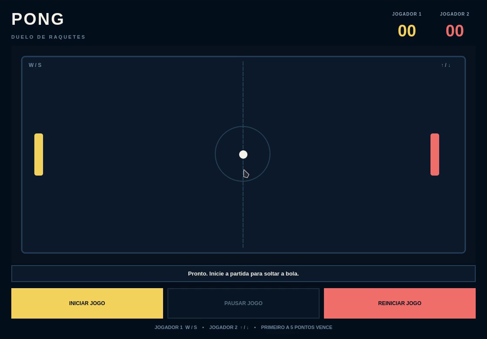
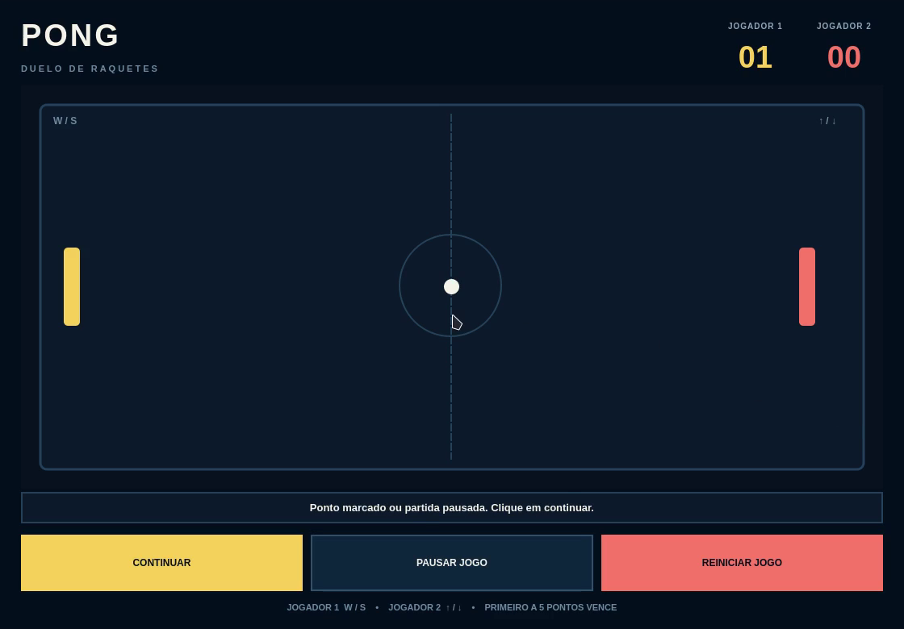

Relatório do projeto de Programação Orientada a Objetos
Aplicação: jogo de raquetes para dois jogadores com Python e PyQt6
Objetivo: rebater a bola e alcançar cinco pontos antes do adversário
O Pong é um jogo para dois jogadores em que cada participante controla uma raquete vertical. A bola atravessa a quadra continuamente, rebate nas bordas e muda sua direção horizontal ao tocar uma raquete. Quando a bola ultrapassa um jogador, o adversário recebe um ponto.
| Classe | Responsabilidade | Conceitos aplicados |
|---|---|---|
Ball | Armazena posição, velocidade, raio, movimento e rebatidas. | Classe, construtor, encapsulamento e métodos de domínio. |
Paddle | Controla posição, tamanho, limites e colisão da raquete. | Atributos privados, propriedades e associação com Ball. |
Player | Representa jogador, lado e pontuação. | Encapsulamento, construtor e métodos de alteração de estado. |
PongGame | Coordena regras, estados, colisões, pontos e vencedor. | Associação entre objetos e separação de responsabilidades. |
GameWorker | Executa o laço contínuo do jogo em uma thread dedicada. | Thread, sincronização, sinais e comunicação entre objetos. |
PongBoard | Desenha a quadra, raquetes, bola e indica os controles. | Herança de QWidget e separação entre domínio e apresentação. |
MainWindow | Organiza janela, botões, placar, mensagens e encerramento. | Composição de objetos Qt e tratamento de eventos. |
Os objetos do domínio possuem responsabilidades diferentes. Ball não conhece a interface, Paddle não decide o vencedor e MainWindow não calcula colisões. Essa divisão torna o código mais fácil de testar e manter.
O encapsulamento aparece nas propriedades de posição e pontuação. Os métodos públicos representam ações válidas, como mover uma raquete, iniciar uma partida ou adicionar um ponto. A associação aparece em PongGame, que mantém uma bola, duas raquetes e dois jogadores.
O processamento contínuo é realizado por GameWorker, movido para uma instância de QThread. Seu laço usa o relógio monotônico, limita o intervalo de atualização e executa aproximadamente 60 atualizações por segundo.
A thread não desenha diretamente na janela. Depois de atualizar o domínio, ela emite um sinal com um GameSnapshot. A interface recebe o sinal na thread principal do Qt e chama update() no widget de desenho. Assim, o processamento da bola não congela a janela e a pintura continua obedecendo ao modelo de eventos do Qt.
Os comandos de controle utilizam um RLock para proteger o estado compartilhado. O encerramento sinaliza o evento de parada, libera o laço e aguarda a thread terminar antes de fechar o processo.


Figura 1 — Quadra, controles e placar. Figura 2 — Partida após marcação de pontos.
Repositório: github.com/MiguelMartinezUnifesp/pong
O projeto foi executado com uv sync e uv run pong. Foram verificadas a compilação dos módulos, a pontuação, a condição de vitória, os limites das raquetes, a inicialização da janela, a atualização da interface e o encerramento correto da thread.
O vídeo demonstrativo apresenta a quadra, controles, colisões, pontos, pausa, reinício, classes principais e o uso da thread. A narração foi sintetizada localmente em português brasileiro para fins acadêmicos não comerciais.